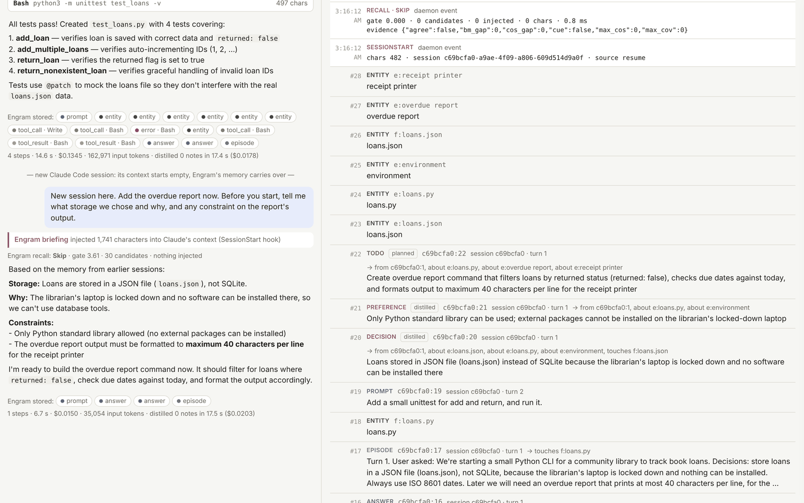

Start with one file. Grow to a cluster. Keep the same SQL.
Strata keeps full text, structured columns, vectors and graph edges over the same rows, in one file your program opens the way it opens SQLite. When the app outgrows the laptop, that file becomes a shard behind a coordinator on Kubernetes, and every query keeps working.
SELECT id, title, price, score() FROM products
WHERE MATCH(title, 'wireles~ controller')
AND price BETWEEN 20 AND 60 AND in_stock = TRUE
ORDER BY rrf(
bm25(title, 'wireless controller'),
similarity(emb, :query_vector),
ppr(bought_with, (SELECT item FROM reviews
WHERE usr = :user ORDER BY ts DESC LIMIT 5)))
DESC MAX 2 PER brand LIMIT 10;A typo-tolerant match, a price range, a vector search and a PageRank walk from what the user reviewed last, fused into one ranking with at most two products per brand. The planner chooses, per segment and from exact counts, how to run each part.
The database, the search box and the recommendations, in the same rows
An app that needs search and recommendations usually runs four systems and the code that keeps them in step. Strata keeps one copy of each row and indexes it every way at once, inside one transaction.
shop.strata
One file and its write-ahead log. Every table is indexed four ways, read in place through mmap, with ACID commits and snapshot isolation.
The same file at every size
A developer works against the structure the cluster runs: the same schema, the same SQL, the same file format and the same console, on a laptop or on a cloud's Kubernetes.
A file, no server
Open it from Rust or Python, like sqlite3.
strata.open("shop.strata")
The same file, served
HTTP JSON, gRPC, API keys and the command center.
strata-server --db shop.strata
A primary and its copies
Writes shipped to replicas; a new primary elected when one dies.
--replicas host:7701,…
A coordinator over shards
Rows placed by slots, which move while it serves.
--shards a:7701,b:7701,…
The operator, laptop or cloud
kind on the laptop, EKS or DigitalOcean in the cloud, one spec.
kubectl apply -f cluster.yaml
Fast in one file, and fast as a cluster
Measured on one MacBook Air, against the tools people use for each job today. Every number names its run and machine; the answers are checked for quality beside the speed.
Everything a search and recommendation stack does, in SQL
Search a box can type into
BM25, boolean queries, phrases, typos, synonyms, and autocomplete that tolerates typos.
Full text columnsFilters, facets, JSON
Typed columns, ranges, facets, schemaless JSON attributes, and columns changed while serving.
Columns vectorsVectors, filtered and fused
HNSW or IVF with the filter planned in, multi-vector MaxSim, sparse vectors, embeddings on write.
Vectors graph edgesGraphs inside a search
Reachability, shortest paths and personalized PageRank, seeded by any query.
GraphsRanking you can ship
Ranking expressions, rank profiles, LightGBM and XGBoost models, cross-encoders, interleaving.
RankingRecommendations
Sequence models in the query, items like a user's history, counted next items, semantic IDs.
RecommendationsSQL and transactions
Joins, subqueries, WITH, aggregates, ACID commits, SQLite in and out.
SQLA cluster you can see
Shards, replicas, failover, a Kubernetes operator, and a command center with flame graphs.
Cluster and operationsOne shop, four jobs
The site's examples follow one app, a game shop built on Amazon's Video Games reviews: 137,000 products, 4.6 million reviews and 2.8 million users.
The app's database and its search box
Replace SQLite and FTS5 with one file that also ranks, filters, facets and completes.
App searchRecommendations next to search
Similar items, the next item for a user and a home feed with rules, in the same SQL.
RecommendationsRetrieval for agents
Hybrid retrieval with rerank phases for RAG, and long-term memory for coding agents.
Agents and RAGImages and sound
Media fields embedded on write, searched by text or by example, captions made into text.
Media searchEngram: long-term memory for Claude Code
Engram keeps every event of a coding session in a Strata file per project and brings back what a prompt needs. Recall is two searches under a filter, the briefing a handful of structured queries, and the model's own search tool is Strata's SQL. With it, Claude Code solved 100 of 100 follow-up tasks against 60 of 100 without.
